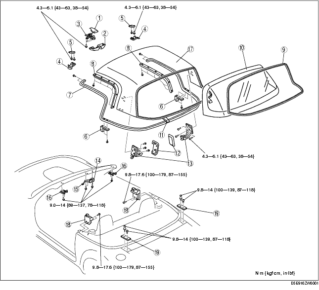
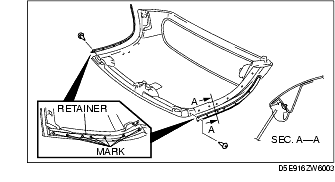

Workshop Manual ➭ BODY & ACCESSORIES ➭ EXTERIOR TRIM ➭ DETACHABLE HARDTOP DISASSEMBLY/ASSEMBLY
DETACHABLE HARDTOP DISASSEMBLY/ASSEMBLY
id091600808000
(1) Female wedge (See CONVERTIBLE TOP DISASSEMBLY/ASSEMBLY.) (2) Map light (See MAP LIGHT REMOVAL/INSTALLATION.) (3) A-pillar trim (See A-PILLAR TRIM REMOVAL/INSTALLATION.) (4) Front header trim (See FRONT HEADER TRIM REMOVAL/INSTALLATION.)

|
Retainer (See Retainer Disassembly Note.) (See Retainer Assembly Note.) |
|
|
Rear window molding (See REAR WINDOW GLASS REMOVAL [DETACHABLE HARDTOP].) (See REAR WINDOW GLASS INSTALLATION [DETACHABLE HARDTOP].) |
|
|
Rear window glass (See REAR WINDOW GLASS REMOVAL [DETACHABLE HARDTOP].) (See REAR WINDOW GLASS INSTALLATION [DETACHABLE HARDTOP].) |
|
Retainer Disassembly Note

Retainer Assembly Note
- Install the retainers to the link, aligning the retainer marks with the retainer installation screws.